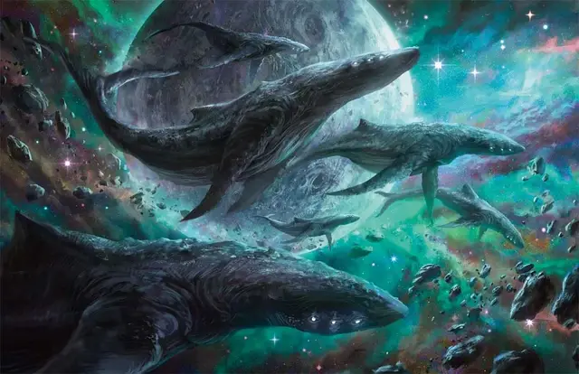

Киндори
Kindori
Громадный Небожитель, без мировоззрения

Класс Доспеха 11 (природный доспех)
Хиты 202 (15к20 + 45)
Скорость 0 футов, летая 60 футов (парит)
| мод | спас | ||
|---|---|---|---|
| СИЛ | 25 | +7 | +7 |
| ЛОВ | 7 | −2 | −2 |
| ТЕЛ | 17 | +3 | +3 |
| мод | спас | ||
|---|---|---|---|
| ИНТ | 6 | −2 | −2 |
| МДР | 14 | +2 | +2 |
| ХАР | 7 | −2 | −2 |
Чувства тёмное зрение 120 футов, пассивное Восприятие 12
Опасность 7 (2900 опыта)
Бонус мастерства +3
Особенности
Необычная природа. Киндори не нуждается в еде, питье и сне.
Действия
Хвост. . Рукопашная атака оружием: +10 к попаданию, досягаемость 5 фт., одна цель. Попадание: 23 (3к10 + 7) дробящего урона.
Бонусные действия
Сверкающие глаза (перезарядка 6). Киндори излучает яркий свет 120 футовым конусом. Все существа в конусе должны преуспеть в спасброске Мудрости Сл 14, иначе станут ослеплёнными на 1 минуту. Существо может повторять спасбросок в конце каждого своего хода, оканчивая эффект на себе в случае успеха.
Описание
Киндори — одни из самых крупных существ, встречающихся в Диком космосе. Своим видом они напоминают морских китов и также являются млекопитающими. Взрослый экземпляр может достигать 80 футов в длину.
У киндори отсутствует видимый рот. На передней части его тела расположены небольшие глаза, способные испускать яркие лучи света. Он использует их для ослепления хищников перед тем, как скрыться. На больших расстояниях киндори общаются друг с другом, посылая вспышки света своими глазами. Питаются они светом солнц и звёзд.
Киндори достаточно велики, чтобы иметь собственную гравитационную плоскость и воздушную оболочку. Это позволяет мелким существам жить и путешествовать на их теле. На поверхности растут мхи, плесень и другие паразитические организмы. Они привлекают хищников, которые очищают от паразитов киндори. Такими хищниками могут стать поглотители. Киндори ничего не имеют против такого соседства. Очень старого или больного киндори можно узнать по обильным зарослям лиан и растительности на нём.
Кости и хрящи мертвого киндори остаются целыми после того, как паразиты пожирают плоть существа. Скелет киндори можно превратить в магический корабль, поместив внутрь магический руль.
Киндори — мирные существа, но у них много естественных врагов, включая лунных драконов, солнечных драконов и различных народов, населяющих Дикий космос.